NAVIGATION
TOP of Page
MAIN Page
HOME Page
PREV Page
NEXT Page
ON THIS PAGE
MAP
ABOUT
ALBURY CITY
Albury
Walking Tour
Albury Station
Murray Museum
ALBURY AREA
Wodonga
Jindera Museum
Walbundrie
THE WETLANDS
Flying Fox
Yindyamarra
West Wetlands
Wonga Wetlands
LAKE HUME AREA
Lake Hume
Bonegilla Migrant
Bandiana Army
Beetoomba Bison
RIVERINA AREAS
Albury-Wodonga
Federation Council
Berrigan Shire
North-West
Campaspe Shire
Moira Shire
Shepparton G.C.
Benalla R.C.
Indigo Shire
Silos & Waterways
|
MAP
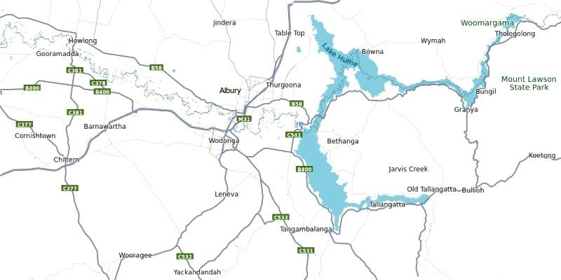
Map of the Albury-Wodonga Area and Lake Hume
ABOUT
Albury-Wodonga is the broad settlement incorporating the twin Australian cities of Albury and
Wodonga, which are separated geographically by the Murray River and politically by a state
border: Albury on the north of the river is part of New South Wales, while Wodonga on the south
bank is in Victoria. In the 2021 census, Albury-Wodonga has a combined population of 97,793 and
is 165 metres above sea level. Albury has a population of 53,767 and is the capital of Albury City
Council.
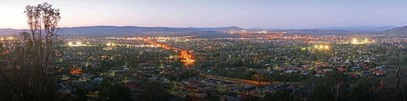
Albury-Wodonga View from Monument Hill
TOP
MAIN
HOME
PREV
NEXT
ALBURY CITY
The Albury CBD Historic Buildings Walking Tour takes you back one hundred years or so,
into the region’s social, political and economic past. Take a walk around the 19th and 20th-century
buildings along Smollett and Dean Streets, including the Albury Public School, St Patrick’s Roman
Catholic Church, Post Office, Town Hall and Court House. Download the free Albury Historic
Buildings Tour app on Android App store or Google Play to access information. The Botanic
Gardens at Dean Street and Wodonga Place has paths that run through landscaped lawns and
include a children's garden. Monument Hill has WWI and WWII memorials with views over the city.
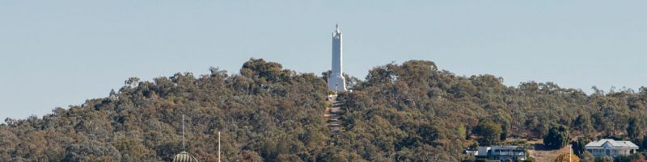
Monument Hill on the Western Edge of Albury CBD
(c) Rob Blackburn / Destination NSW
Albury Railway Station is a heritage-listed railway station at Railway Place, Albury adjacent to
the border with Victoria, in Australia. It was designed under the direction of John Whitton and built
from 1880 to 1881. It was added to the New South Wales State Heritage Register in 1999. Albury
is served by NSW TrainLink XPT services from Sydney Central to Melbourne Southern Cross
services and terminating V/Line services to and from Melbourne Southern Cross.
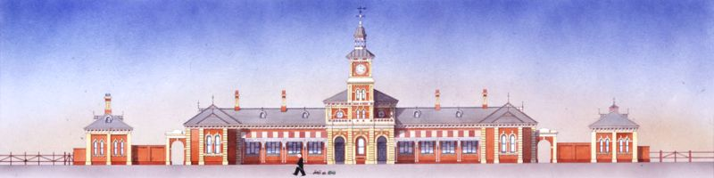
Albury Station on the Corner of Riverina Highway/Young and Smollett Streets
(c) Simon Fieldhouse / Public Transport NSW
TOP
MAIN
HOME
PREV
NEXT
The Murray Art Museum Albury (MAMA) at 546 Dean Street showcases contemporary works,
including photography and indigenous art. Formerly known as the Albury Regional Art Gallery it
was renamed as part of a $10.5 million refurbishment which included renovations to the former
gallery building, the neighbouring Burrows House and the extensions linking and extending both
buildings into QEII Square. It has an Atrium on the ground floor leading to 7 gallery spaces over
two levels. On the north facing terrace is the Canvas Eatery overlooking QEII Square.
The museum manages the art collection of Albury City Council, an extensive collection of over
3,000 items. The photography collection comprises over 600 works and is one of the most
important of its kind in Australia. It includes works by Tracey Moffatt, Max Dupain, Richard
Woldendorp, Michael Riley, Destiny Deacon, Olive Cotton, Justine Varga and Philip Quirk. Other
highlights in the permanent collection include works by Russell Drysdale, Margaret Olley, Patrick
Hartigan, Lorraine Connelly-Northey, Brook Garru Andrew and Hany Armanious.
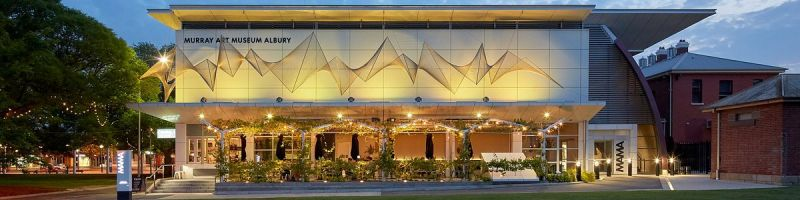
Murray Art Museum Albury (MAMA)
Link to Museum
ALBURY AREA
Wodonga, VIC has a population of 43,253 and is the capital of Wodonga Council. It contains the
Hyphen-Wodonga Library Gallery. There are several galleries and studios and the building’s
impressive cantilever design and spiral staircase. Take a walk around the lake at Belvoir Park or
head up to Huon Hill lookout for an unforgettable panorama and watch the sunset over the city.
The Jindera Pioneer Museum is a unique facility at 118 Urana Street, just 15 km north of Albury
and is said to be one of the best in regional Australia. The Museum complex contains a remarkable
old store and a variety of dwellings, with authentic pioneer to late Victorian architecture and
furnishings. Spread over two acres of lovely grounds, with over 25 rooms and galleries, the
Museum is also home to a significant and impressive historic machinery and transport display. The
1874 Blacksmith and stables is also a popular feature.
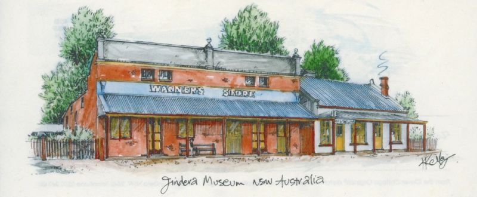
Jindera Pioneer Museum at 118 Urana St, Jindera
Link to Museum
Walbundrie, NSW is a village on the bank of the Billabong Creek which passes immediately
south of the town. It is on the edge of the Greater Hume Shire LGA and has a population of 190. The
major industry is agriculture, including grain production and wool growing.
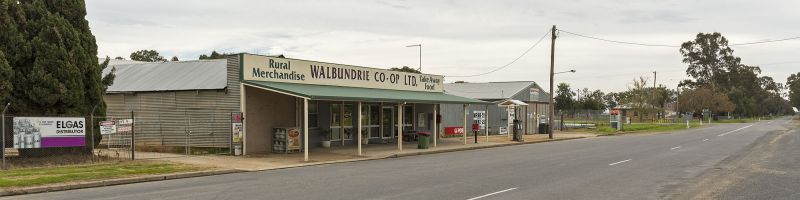
Walbundrie Co-op on Billabong Street
TOP
MAIN
HOME
PREV
NEXT
THE WETLANDS
The Flying Fox Viewing Platform alongside the Wagirra Trail near the Kremur Street boat ramp,
will provide excellent views of the flying fox colony at Leaney’s Bend. Use the platform to reduce
the risk of the animals abandoning the colony and moving to a less suitable location. It’s especially
important not to allow dogs near the colony.
Flying foxes are an important part of the ecosystem. As major pollinator for native plants, a fall in
their numbers would cause a decline in the health of native vegetation so it’s important to ensure
the animals are protected from the stress that human interaction can cause.
It’s also important to remember that flying foxes can carry a disease harmful to people so it’s
crucial to keep your distance – and of course, never attempt to touch them.
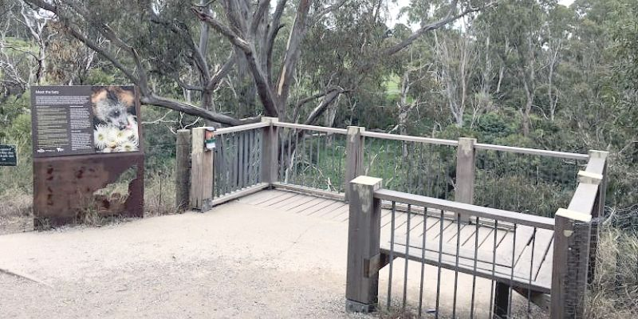
Flying Fox Viewing Platform on Day Street, West Albury
The Yindyamarra Sculpture Walk commences at Kremur Street and features a
series of stunning contemporary Aboriginal sculptures lining the Wagirra Trail from Kremur Street
to Wonga Wetlands. Fifteen sculptures created by local Aboriginal artists have been installed along
the five kilometres of trail. The Wagirra Trail also links to the Bungambrawatha Creek Trail, West
Albury Trail, South Albury Trail and beyond to the Albury– Thurgoona Trail.
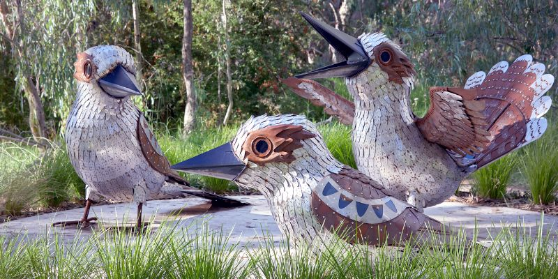
Yindyamarra Sculture Walk - Guguburras - Artist Peter Ingram / Wiradjuri
Link to Yindyamarra
TOP
MAIN
HOME
PREV
NEXT
West Albury Wetlands is 1.5 km west of Albury CBD on the Padman Drive / Riverina Highway.
About 3 kilometres of walking paths allows visitors to experience these beautiful wetlands. The
wetlands are home to around 150 species of birds, which can be seen throughout the year in their
natural habitat. You can also see ancient river red gums and a traditional Wiradjuri campsite.
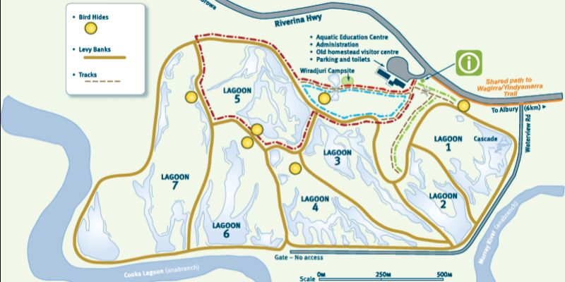
Map of West Albury Wetlands on the Padman Drive / Riverina Highway
Wonga Wetlands is located at 2377 Riverina Highway at Splitters Creek, 6 kilometres west of
Albury. A self-guided tour map is available from the car park area and there are facilities to safely
secure your bike. In Winter you'll find the wetlands full to capacity. Pelicans and Swans love this
time of year. Over Spring the water starts to recede exposing muddy shorelines which attracts
hundreds of wading birds. During Summer the water levels reduce and may dry out completely and
as Autumn arrives and temperatures drop the wetlands are again flooded and life begins all over.
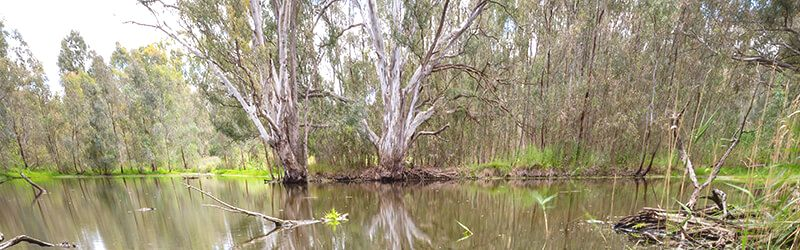
Wonga Wetlands at 2377 Riverina Highway, Splitters Creek
Link to Wonga
TOP
MAIN
HOME
PREV
NEXT
LAKE HUME AREA
Lake Hume is six times larger than Sydney Harbour. The spectacular High Country Rail Trail
extends 30km along the foreshore of the lake. A separate equestrian trail between Sandy Creek
and Old Tallangatta means that horses rarely cross the cycling/walking trail. The diverse birdlife of
the Kiewa River woodlands contrasts with crystal clear reflections from Lake Hume.
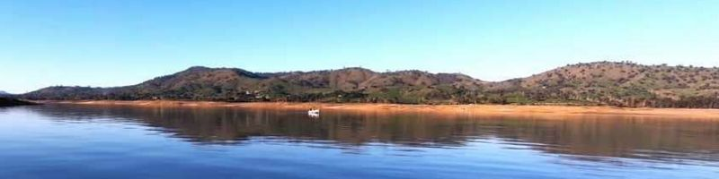
Lake Hume to the East of Albury-Wodonga
The Bonegilla Migrant Reception and Training Centre was a camp set up for receiving and
training migrants to Australia during the post World War II immigration boom. The camp was set
on 130 hectares near Wodonga at the locality of Bonegilla in north-east Victoria, between the
Hume Dam and the city of Wodonga. The camp opened in 1947 and operated until 1971, over
which period it received over 300,000 migrants. It is estimated that over 1.5 million Australians are
descended from migrants who spent time at Bonegilla.
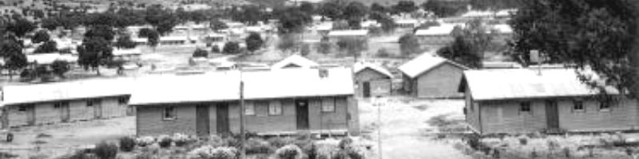
Bonegilla Migrant Reception and Training Centre, 1954
By Nationaal Archief - Immigrantenkamp Bonegilla in Australië, No restrictions,
https://commons.wikimedia.org/w/index.php?curid=7782758
Link to Bonegilla
TOP
MAIN
HOME
PREV
NEXT
The Bandiana Army Museum, VIC at Anderson Road, South Bandiana, VIC is one of the largest
and most diversified Army Museums in Australia with 5,000 square metres of Army display under
one roof. Numerous uniforms are on display including WWI, WW2 and the present day. 150
weapons including machine guns and pistols and a historic vehicle display of 150 plus military
vehicles including bikes, cars, trucks, heavy equipment and armoured vehicles can be viewed.
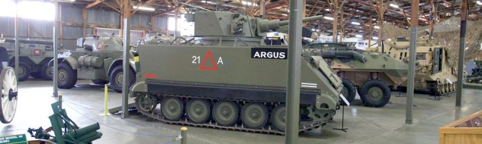
Bandiana Army Museum
Link to Bandiana
Beetoomba Bison Ranch at 4102 Murray Valley Highway, Berringama, VIC is an alternative farming enterprise in
North East Victoria. It was established in 1989 as the first commercial Bison farm in Australia. From around 60
million bison in American and Canada, the population was reduced by European colonials to less than 500.
Conservation programs are building numbers up again.
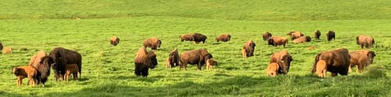
Baby Bison at Beetoomba Bison Ranch
Link to Beetoomba
TOP
MAIN
HOME
PREV
NEXT
|